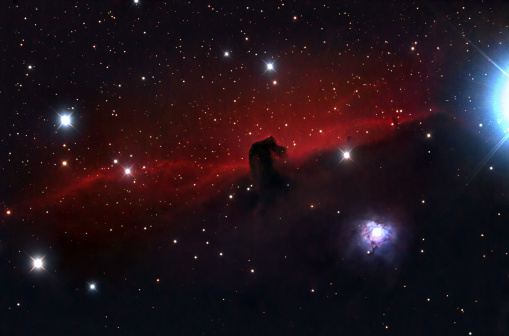
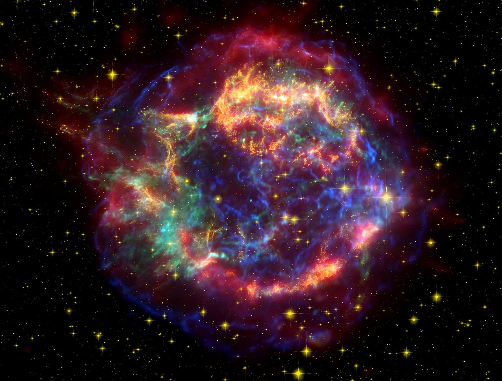

Webb and Hubble telescopes unite to image flashy clash of galaxies cluster.
Together the space observatories have gleaned a comprehensive picture of a merging galaxy cluster, including several new background objects magnified by the cluster itself. Read More
The Horsehead Nebula in Orion: An unbridled look
The Horsehead Nebula has captured the public's attention like few other celestial objects. And though its history is fascinating, it's also mysterious Read More

Butterfly Nebula Facts (NGC 6302)
The Butterfly Nebula is the remnants of a dying star that is estimated at having five times the mass of our Sun. You can see why it gets its name, the gasses sprouting out from the centre look like butterfly wings. Read More
Cassiopeia A (Cas A)
Cassiopeia A (Cas A) is a supernova remnant located in the constellation Cassiopeia. It lies at an approximate distance of 11,000 light years from Earth and has a diameter of about 10 light years. The remnant can be seen in visible light with amateur telescopes, starting with 9.25-inch instruments with filters. Read More